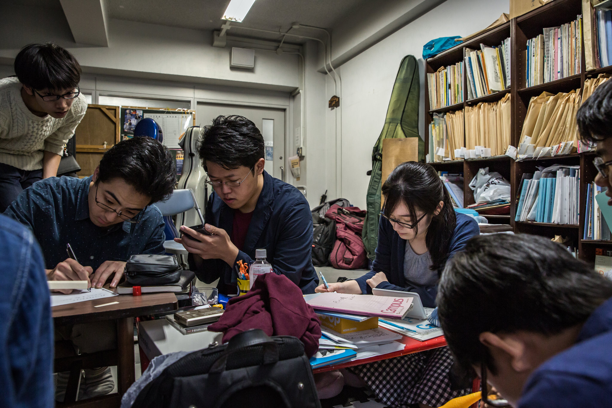
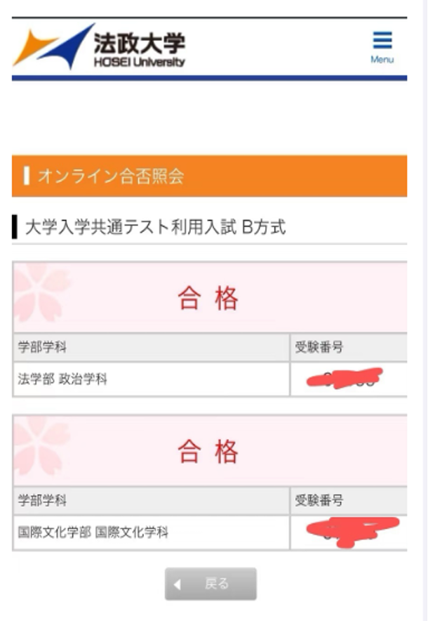
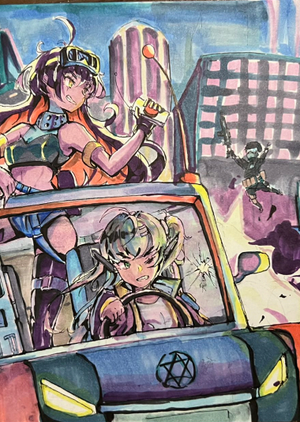

Achievements
合格实绩
2026 年 4 月时点，按“合格校次”公开结果；同时展示可核对的准备案例与教研资料。
2026
9合格校次
6所大学
日本大学3
东京科学大学2
北海道大学1
京都产业大学1
神奈川工科大学1
中央大学1



2026 校内考案例
东京科学大学（理工学系）
2报名→2笔试合格→2最终合格
数学・物理・化学｜原创模拟题｜模拟面试｜面试对策讲义
查看实际案例与教研资料 →统计口径为合格校次，不等同于独立学生人数。东京科学大学案例可查看实际教研材料；其他首页图片为部分打码资料。
Courses
四类本科升学课程
先看自己采用哪种入试方式，再进入对应课程。首页只保留选择课程时最需要判断的信息。
01
采用共通考试成绩的升学路径
共通考试
先核对目标校指定科目，再按共通テスト 7 教科体系安排数学、理科、地理历史・公民、国語、外语与情報Ⅰ等课程。
7 教科完整整理13 门常设理科基础・情報Ⅰ
7 教科
02
需要按个人科目与进度推进
EJU 一对一
适合已明确 EJU 报考科目、需要按当前基础调整节奏的学生；以 1:1 推进科目学习与出愿准备。
1 : 1科目进度出愿・面试
03
已明确目标校的专项准备
校内考对策
从募集要项、笔试科目和历年题型确定范围，再用原创模拟题与模拟面试检验准备。
募集要项原创模拟题模拟面试

04
日本美术大学・艺术类学部
美术升学
根据专业方向与目标校要求安排实技、作品集、志望理由与面试准备。
实技作品集出愿・面试

Approach
先确定怎么考，再决定怎么学
目标校与学部决定入试方式；入试方式进一步决定考试科目、准备顺序和时间节点。
01
确认目标校与入试方式先看募集要项，核对学部、考试科目、成绩条件与日期。
02
按考试方式安排学习按共通、EJU、校内考科目或美术实技拆分阶段任务；目标校专项再用历年题型、原创模拟题与作品准备检验。
03
把出愿与面试放进同一时间轴在报名截止前完成材料核对、志望理由与模拟面试，避免临近出愿再补准备。
Admissions Support
出愿前后的准备
四个阶段与课程进度同步确认，具体支持范围按目标校、课程与出愿时间确定。
01志愿规划目标校・学部・入试方式・考试科目
02材料准备募集要项・提交材料・时间节点
03出愿手续材料核对・报名流程・提交确认
04面试准备志望理由・常见问答・模拟面试
Faculty
教学团队
按数学、理科、语言・人文、美术分工，公开担当科目与所属院校；实际担当以当期排课为准。
数学
脇村老师筑波大学
坂野老师早稻田大学
陆老师东京科学大学
理科
语言・人文
刘老师东京大学｜国语・英语・政经・世界史
卢老师横滨国立大学｜日语
沈老师布里斯托大学｜英语
丁老师千叶大学｜地理
美术
妮老师多摩美术大学｜美术
汤老师多摩美术大学｜雕刻
张老师多摩美术大学｜油画
兰老师东京造型大学大学院｜染织设计
薛老师北京电影学院｜动画实战
事务・运营・开发籍老师｜东京理科大学吴老师｜东京理科大学杨老师｜顺天堂大学谢老师｜明治大学周老师｜名古屋大学
Careers讲师・运营成员招聘
联系应聘 →应聘请提供简历、希望负责的科目或业务方向，以及相关考试、授课或项目经历。
Contact
升学咨询
提供目标校・学部、当前成绩和预计考试或入学时间，即可开始判断适合的准备路径。